The write-up below details the steps taken to explore the different packages available to perform Ordinary Least Square regression model to estimate the relationship of determinants and Greenhouse gas emission levels. This is part of the project deliverables for a project undertaken for the course ISSS608- Visual Analytics offered in SMU MITB.
Ordinary least squares (OLS) regression is a statistical method to estimate the relationship between one or more independent variables and a dependent variable by minimizing the sum of the squares in the difference between the observed and predicted values of the dependent variable based on the best fit straight line. There are a wide range of published papers which explored using OLS to estimate the relationship between various factors and greenhouse gas emissions. Some examples of these papers are listed below:
Nonetheless, research papers usually only published the final model used in their analysis (often without the exact code) and omitted the intermediate steps used to derive the final set of predictors. Tests conducted to ensure that OLS assumptions were not violated were also seldom presented in the papers. Hence, this exercise aims to explore different R packages which are able to run different permutations of OLS models, the necessary list of OLS assumption tests and present results in the form of a visualization.
A list of packages are required for this makeover exercise. This code chunk installs the required packages and loads them onto RStudio environment.
packages = c('tidyverse', 'olsrr', 'lmtest', 'dplyr', 'ggplot2', 'ggstatsplot', 'ggcorrplot',
'purrr', 'jtools', 'broom.mixed', 'ggstance', 'EnvStats', 'graphics','caret','ppcor')
for (p in packages){
if(!require(p, character.only = T)){
install.packages(p)
}
library(p, character.only = T)
}
All the datasets used for this project is obtained from Eurostat, the database with European statistics maintained by the statistical office of the European Union. Our group will be focusing on the overall greenhouse gas emissions, excluding Land Use and Land Use Change and Forest (LULUCF) while also exploring into the common greenhouse gases (i.e. carbon dioxide, methane and nitrous oxide).
As multiple data was pulled from Eurostat database, please refer to Data Preparation page for the glossary list and steps taken to merge and obtain a single dataset for analysis.
The output shows that all except ‘Country’ is numeric variable, which is correct. Hence there’s no need to change the type of any variable.
# Reading the csv file as a tbl_df
ghg_2010_2018 <- read_csv("data/GHGproj_data.csv")
# Inspecting the structure of the dataset
str(ghg_2010_2018)
spec_tbl_df [324 x 15] (S3: spec_tbl_df/tbl_df/tbl/data.frame)
$ Country : chr [1:324] "European Union - 27 countries (from 2020)" "European Union - 27 countries (from 2020)" "European Union - 27 countries (from 2020)" "European Union - 27 countries (from 2020)" ...
$ Year : num [1:324] 2010 2011 2012 2013 2014 ...
$ GHG_emissions : num [1:324] 4188244 4075283 3996645 3912623 3776464 ...
$ CO2_emissions : num [1:324] 3443914 3338307 3262594 3181485 3046141 ...
$ CH4_emissions : num [1:324] 427118 419634 416827 411161 406015 ...
$ NO2_emissions : num [1:324] 219323 216187 213789 214272 216858 ...
$ GDP : num [1:324] 10977298 11321811 11388518 11517119 11781640 ...
$ Final_EI : num [1:324] 92.2 85.9 84.3 83.6 77.4 ...
$ Fuel_mix : num [1:324] 2.8 2.88 2.78 2.67 2.62 2.57 2.54 2.53 2.4 NA ...
$ Carbon_intensity: num [1:324] 91.9 91.5 90.9 89.5 88.3 88.7 88 86.7 85.2 NA ...
$ Renewables_share: num [1:324] 14.4 14.6 16 16.7 17.5 ...
$ Envt_taxes : num [1:324] 259023 271901 278204 284121 291030 ...
$ Liquid_biofuels : num [1:324] 29689 28711 28422 29751 29152 ...
$ Solar_thermal : num [1:324] 34488 37949 40587 43246 45425 ...
$ Heat_pumps : num [1:324] 31200 43941 48603 53298 79990 ...
- attr(*, "spec")=
.. cols(
.. Country = col_character(),
.. Year = col_double(),
.. GHG_emissions = col_double(),
.. CO2_emissions = col_double(),
.. CH4_emissions = col_double(),
.. NO2_emissions = col_double(),
.. GDP = col_double(),
.. Final_EI = col_double(),
.. Fuel_mix = col_double(),
.. Carbon_intensity = col_double(),
.. Renewables_share = col_double(),
.. Envt_taxes = col_double(),
.. Liquid_biofuels = col_double(),
.. Solar_thermal = col_double(),
.. Heat_pumps = col_double()
.. )For the purpose of exploring OLS regression model in this assignment, the building of the OLS model will focus only on 2018 data. Other years of regression model can be run subsequently by filtering the dataset to the specific year itself.
When importing the dataset earlier, there were records such as “European Union - 27 countries (from 2020)”, “European Union - 27 countries (from 2020)” etc, which presents the combination of multiple countries. As such, these records are excluded using the dplyr() package to prevent serious correlation with other records (countries). To have a consistent naming of countries, “Germany (until 1990 former territory of the FRG)” was replaced with “Germany” using the tidyverse() package.
In addition, instead of having “Country” reflected as a column variable, additional code was ran to reflect the countries as “Row name”. Given that the focus of this dataset is on 2018, the “Year” variable can be dropped as it’s redundant.
ghg_2018 <- ghg_2010_2018 %>%
filter(Year == 2018) %>% # Subset the dataset to get 2018 records
filter(!grepl('European Union', Country)) %>% # Exclude records containing 'European Union'
replace(., (.)=='Germany (until 1990 former territory of the FRG)', "Germany") %>% #Replace country name for Germany
remove_rownames %>% column_to_rownames(var="Country") # Change column "Country" to "Row name"
ghg_2018 <- subset(ghg_2018, select=-c(Year)) # Drop the "Year" variable since it's redundant
Reviewing the Variables
(A) Density plot
The density plots plotted using ggplot2() package showed that the values/scales of “CH4_emissions”, “CO2_emissions”, “Envt_taxes”, “GDP”, “GHG_emissions”, “Heat_pumps”, “Liquid_biofuels”, “NO2_emissions” and “Solar_thermal” are very large compared to “Carbon_intensity”, Final_EI“,”Fuel_mix" and “Renewables_share”. Hence, transformation may be applied on the former group of variables for better interpretability of the coefficient in the output.
To get histogram plot, change “geom_density()” to “geom_histogram()” in the code chunk.
ghg_2018 %>%
keep(is.numeric) %>% # Keep only numeric columns
gather() %>% # Convert to key-value pairs
ggplot(aes(value)) + # Plot the values
facet_wrap(~ key, scales = "free") + # In separate panels
geom_density() # as density
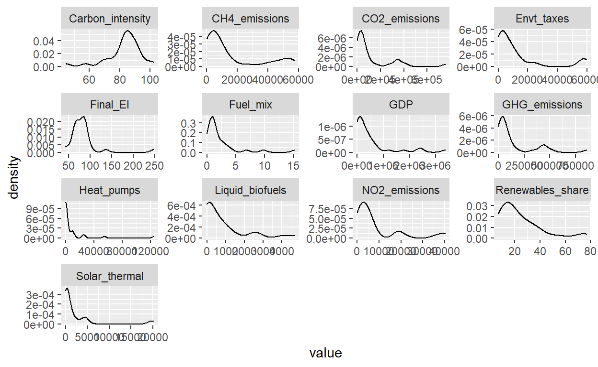
An example of transformation is by taking “log (base e)” on the variables as shown below, so that the scales of the variables are similar.
ghg_2018 %>%
keep(is.numeric) %>%
gather() %>%
ggplot(aes(log(value))) + # transformation
facet_wrap(~ key, scales = "free") +
geom_density()
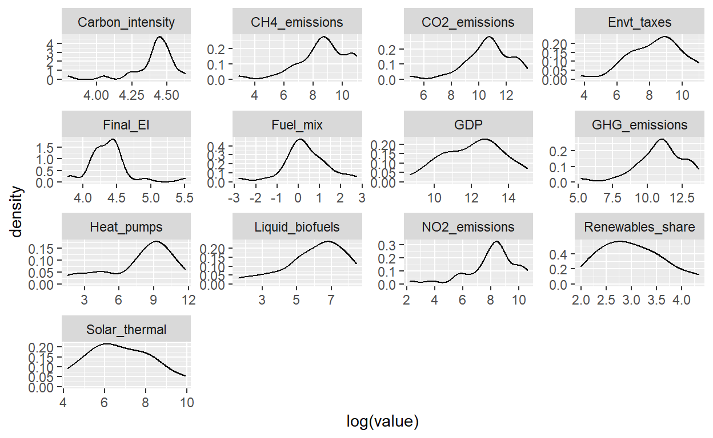
(B) Correlation plot
Using the ggcorrplot() package, we can plot a correlalogram (with correlation coefficient). If there are NAs present in the selected variables, the legend will display minimum, median, and maximum number of pairs used for correlation tests.
The chart below showed that some predictors are highly correlated with each other (either dark grey or dark red) and hence we will probably expect some predictors to be omitted in the OLS regression output.For example, Envt_taxes and GDP are highly correlated (0.96) and if these two predictors were to be included in the same model, either will be omitted.
# as a default this function outputs a correlation matrix plot
ggstatsplot::ggcorrmat(
data = ghg_2018,
colors = c("#B2182B", "white", "#4D4D4D"),
title = "Correlalogram for Greenhouse gas emission 2018 dataset"
)
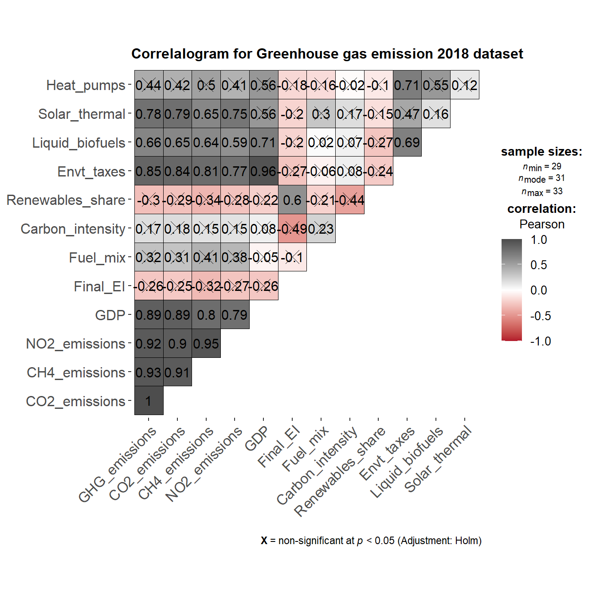
Final dataset for OLS model
For ease of coding, create a dataframe containing only the transformed variables. In addition, we will focus on using “GHG_emissions” as the dependent variable. To explore other source of emission, one can amend the code accordingly.
In this section, 2 main modules will be covered, namely (1) Variable Selection and (2) Selected Model.
For illustration of the different modules, we randomly selected 3 independent variables, namely “GDP”, “Final_EI” and “Fuel_mix” to be considered. In the proposed shiny app, there will be a multi-select option for users to decide the independent variables they wish to consider.
In addition, the olsrr() package will be primarily used as it provides the following tools for building OLS regression models using R.
Nonetheless, other R packages will also be explored to determine the most appropriate data visualization.
In this section, 6 main methods will be explored to identify the best subset of predictors to include in the model, among all possible subsets of predictors.
(i) All possibilities
All subset regression tests all possible subsets of the set of potential independent variables. If there are k potential independent variables (besides the constant), then there are 2^k distinct subsets of them to be tested. Hence, for this dataset, if all the potential independent variables are include into the model, there will be 2^9 = 512 models generated.
Base on the plots, model 7 has the highest adjusted R-sqaure and lowest AIC, hence is the better model compared to models 1-6.
model <- lm(GHG_emissions ~ GDP + Final_EI + Fuel_mix, data = ghg_2018_ols)
# Detailed output
k <- ols_step_all_possible(model)
k
Index N Predictors R-Square Adj. R-Square Mallow's Cp
1 1 1 GDP 0.8251792 0.81953986 57.874319
3 2 1 Fuel_mix 0.1594361 0.13045118 248.904042
2 3 1 Final_EI 0.1123569 0.08174848 264.357194
5 4 2 GDP Fuel_mix 0.9171542 0.91123668 2.193035
4 5 2 GDP Final_EI 0.8578250 0.84766963 21.667079
6 6 2 Final_EI Fuel_mix 0.2398643 0.18556886 224.504564
7 7 3 GDP Final_EI Fuel_mix 0.9177423 0.90860259 4.000000# Panel of fit criteria
plot(k, main = "Panel of fit criteria", xlab="No. of predictors", ylab="Value")
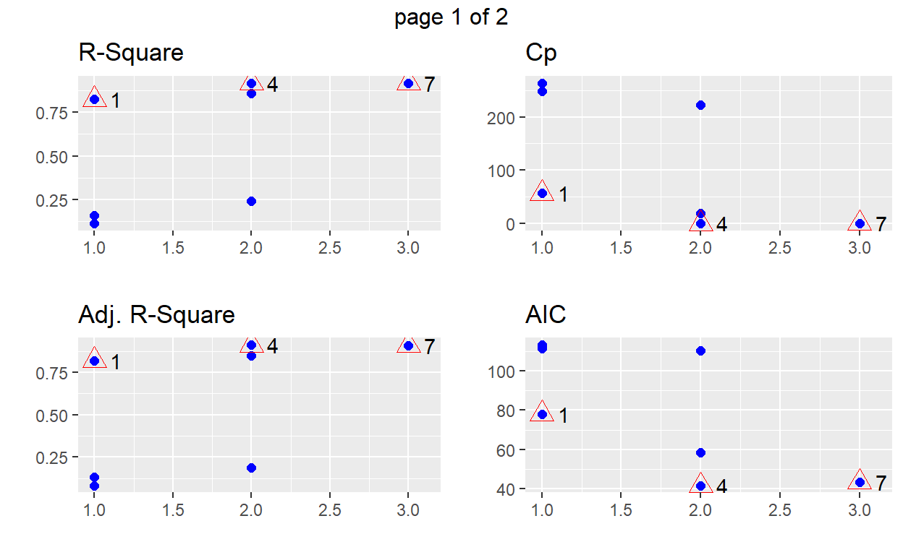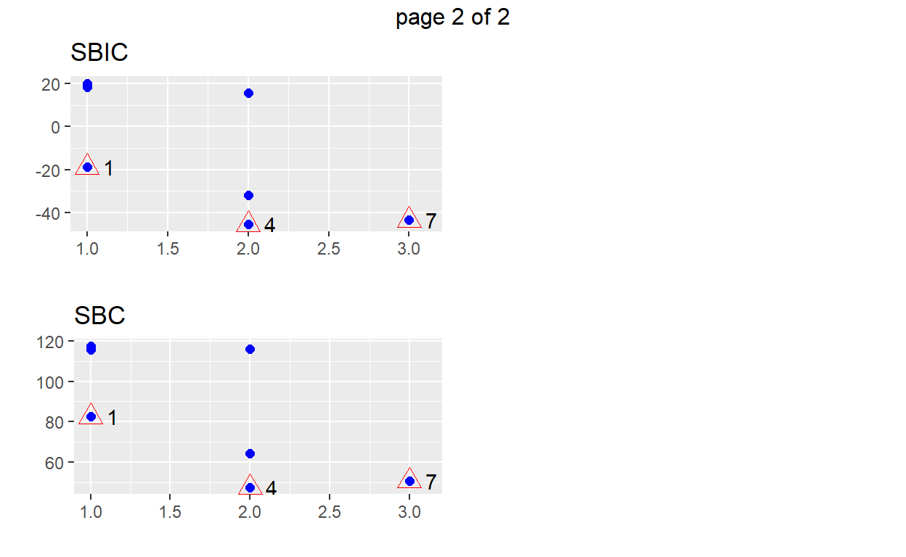
(ii) Best Subset
The code chunk below selects the subset of predictors that do the best at meeting some well-defined objective criterion e.g. largest adjusted R-square or smallest AIC etc. From the plot, users will be able to identify the model with the highest adjusted R-square value etc.
model <- lm(GHG_emissions ~ GDP + Final_EI + Fuel_mix , data = ghg_2018_ols)
# Detailed output
k <- ols_step_best_subset(model)
k
Best Subsets Regression
------------------------------------
Model Index Predictors
------------------------------------
1 GDP
2 GDP Fuel_mix
3 GDP Final_EI Fuel_mix
------------------------------------
Subsets Regression Summary
-------------------------------------------------------------------------------------------------------------------------------
Adj. Pred
Model R-Square R-Square R-Square C(p) AIC SBIC SBC MSEP FPE HSP APC
-------------------------------------------------------------------------------------------------------------------------------
1 0.8252 0.8195 0.7877 57.8743 78.1392 -18.7605 82.6287 18.3075 0.5883 0.0185 0.1974
2 0.9172 0.9112 0.9032 2.1930 41.6987 -45.4747 47.4346 5.9678 0.2108 0.0071 0.1006
3 0.9177 0.9086 0.8923 4.0000 43.4778 -43.3551 50.6478 6.1533 0.2235 0.0076 0.1066
-------------------------------------------------------------------------------------------------------------------------------
AIC: Akaike Information Criteria
SBIC: Sawa's Bayesian Information Criteria
SBC: Schwarz Bayesian Criteria
MSEP: Estimated error of prediction, assuming multivariate normality
FPE: Final Prediction Error
HSP: Hocking's Sp
APC: Amemiya Prediction Criteria # Panel of fit criteria
plot(k, main = "Panel of fit criteria", xlab="No. of predictors", ylab="Value")
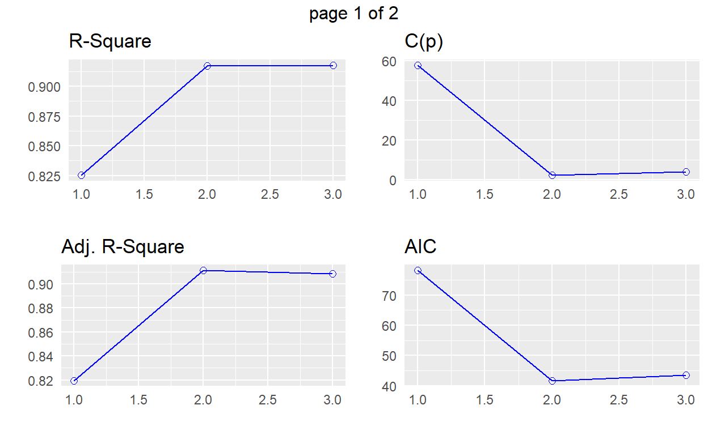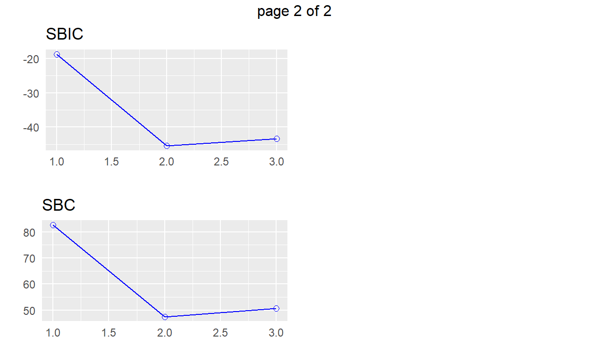
(iii) Stepwise Forward
In a step-wise method, we can start with a single predictor and continue to add predictors based on p-value until no variable is left. The output plot shows the changes in the criterion value upon adding a predictor which is useful for the users to understand the importance of the predictor added into the model.
model <- lm(GHG_emissions ~ GDP + Final_EI + Fuel_mix , data = ghg_2018_ols)
# Selection summary
k <- ols_step_forward_p(model)
k
Selection Summary
------------------------------------------------------------------------
Variable Adj.
Step Entered R-Square R-Square C(p) AIC RMSE
------------------------------------------------------------------------
1 GDP 0.8252 0.8195 57.8743 78.1392 0.7448
2 Fuel_mix 0.9172 0.9112 2.1930 41.6987 0.4384
------------------------------------------------------------------------# Plot
plot(k)
# obtain detailed output
ols_step_forward_p(model, details = TRUE)
Forward Selection Method
---------------------------
Candidate Terms:
1. GDP
2. Final_EI
3. Fuel_mix
We are selecting variables based on p value...
Forward Selection: Step 1
- GDP
Model Summary
-------------------------------------------------------------
R 0.908 RMSE 0.745
R-Squared 0.825 Coef. Var 6.842
Adj. R-Squared 0.820 MSE 0.555
Pred R-Squared 0.788 MAE 0.561
-------------------------------------------------------------
RMSE: Root Mean Square Error
MSE: Mean Square Error
MAE: Mean Absolute Error
ANOVA
--------------------------------------------------------------------
Sum of
Squares DF Mean Square F Sig.
--------------------------------------------------------------------
Regression 81.167 1 81.167 146.324 0.0000
Residual 17.196 31 0.555
Total 98.363 32
--------------------------------------------------------------------
Parameter Estimates
---------------------------------------------------------------------------------------
model Beta Std. Error Std. Beta t Sig lower upper
---------------------------------------------------------------------------------------
(Intercept) -1.041 0.994 -1.047 0.303 -3.069 0.987
GDP 0.983 0.081 0.908 12.096 0.000 0.817 1.148
---------------------------------------------------------------------------------------
Forward Selection: Step 2
- Fuel_mix
Model Summary
-------------------------------------------------------------
R 0.958 RMSE 0.438
R-Squared 0.917 Coef. Var 3.959
Adj. R-Squared 0.911 MSE 0.192
Pred R-Squared 0.903 MAE 0.330
-------------------------------------------------------------
RMSE: Root Mean Square Error
MSE: Mean Square Error
MAE: Mean Absolute Error
ANOVA
--------------------------------------------------------------------
Sum of
Squares DF Mean Square F Sig.
--------------------------------------------------------------------
Regression 59.588 2 29.794 154.989 0.0000
Residual 5.383 28 0.192
Total 64.971 30
--------------------------------------------------------------------
Parameter Estimates
--------------------------------------------------------------------------------------
model Beta Std. Error Std. Beta t Sig lower upper
--------------------------------------------------------------------------------------
(Intercept) 0.191 0.643 0.298 0.768 -1.125 1.508
GDP 0.849 0.053 0.884 16.003 0.000 0.740 0.958
Fuel_mix 0.557 0.124 0.247 4.479 0.000 0.302 0.811
--------------------------------------------------------------------------------------
No more variables to be added.
Variables Entered:
+ GDP
+ Fuel_mix
Final Model Output
------------------
Model Summary
-------------------------------------------------------------
R 0.958 RMSE 0.438
R-Squared 0.917 Coef. Var 3.959
Adj. R-Squared 0.911 MSE 0.192
Pred R-Squared 0.903 MAE 0.330
-------------------------------------------------------------
RMSE: Root Mean Square Error
MSE: Mean Square Error
MAE: Mean Absolute Error
ANOVA
--------------------------------------------------------------------
Sum of
Squares DF Mean Square F Sig.
--------------------------------------------------------------------
Regression 59.588 2 29.794 154.989 0.0000
Residual 5.383 28 0.192
Total 64.971 30
--------------------------------------------------------------------
Parameter Estimates
--------------------------------------------------------------------------------------
model Beta Std. Error Std. Beta t Sig lower upper
--------------------------------------------------------------------------------------
(Intercept) 0.191 0.643 0.298 0.768 -1.125 1.508
GDP 0.849 0.053 0.884 16.003 0.000 0.740 0.958
Fuel_mix 0.557 0.124 0.247 4.479 0.000 0.302 0.811
--------------------------------------------------------------------------------------
Selection Summary
------------------------------------------------------------------------
Variable Adj.
Step Entered R-Square R-Square C(p) AIC RMSE
------------------------------------------------------------------------
1 GDP 0.8252 0.8195 57.8743 78.1392 0.7448
2 Fuel_mix 0.9172 0.9112 2.1930 41.6987 0.4384
------------------------------------------------------------------------(iv) Stepwise Backward
Similarly, we can start with the full list of predictors and remove predictors based on p-value until only one variable is left.
model <- lm(GHG_emissions ~ GDP + Final_EI + Fuel_mix , data = ghg_2018_ols)
# Selection summary
k <- ols_step_backward_p(model)
k
Elimination Summary
-----------------------------------------------------------------------
Variable Adj.
Step Removed R-Square R-Square C(p) AIC RMSE
-----------------------------------------------------------------------
1 Final_EI 0.9172 0.9112 2.1930 41.6987 0.4384
-----------------------------------------------------------------------# Plot
plot(k)
# obtain detailed output
ols_step_backward_p(model, details = TRUE)
Backward Elimination Method
---------------------------
Candidate Terms:
1 . GDP
2 . Final_EI
3 . Fuel_mix
We are eliminating variables based on p value...
- Final_EI
Backward Elimination: Step 1
Variable Final_EI Removed
Model Summary
-------------------------------------------------------------
R 0.958 RMSE 0.438
R-Squared 0.917 Coef. Var 3.959
Adj. R-Squared 0.911 MSE 0.192
Pred R-Squared 0.903 MAE 0.330
-------------------------------------------------------------
RMSE: Root Mean Square Error
MSE: Mean Square Error
MAE: Mean Absolute Error
ANOVA
--------------------------------------------------------------------
Sum of
Squares DF Mean Square F Sig.
--------------------------------------------------------------------
Regression 59.588 2 29.794 154.989 0.0000
Residual 5.383 28 0.192
Total 64.971 30
--------------------------------------------------------------------
Parameter Estimates
--------------------------------------------------------------------------------------
model Beta Std. Error Std. Beta t Sig lower upper
--------------------------------------------------------------------------------------
(Intercept) 0.191 0.643 0.298 0.768 -1.125 1.508
GDP 0.849 0.053 0.884 16.003 0.000 0.740 0.958
Fuel_mix 0.557 0.124 0.247 4.479 0.000 0.302 0.811
--------------------------------------------------------------------------------------
No more variables satisfy the condition of p value = 0.3
Variables Removed:
- Final_EI
Final Model Output
------------------
Model Summary
-------------------------------------------------------------
R 0.958 RMSE 0.438
R-Squared 0.917 Coef. Var 3.959
Adj. R-Squared 0.911 MSE 0.192
Pred R-Squared 0.903 MAE 0.330
-------------------------------------------------------------
RMSE: Root Mean Square Error
MSE: Mean Square Error
MAE: Mean Absolute Error
ANOVA
--------------------------------------------------------------------
Sum of
Squares DF Mean Square F Sig.
--------------------------------------------------------------------
Regression 59.588 2 29.794 154.989 0.0000
Residual 5.383 28 0.192
Total 64.971 30
--------------------------------------------------------------------
Parameter Estimates
--------------------------------------------------------------------------------------
model Beta Std. Error Std. Beta t Sig lower upper
--------------------------------------------------------------------------------------
(Intercept) 0.191 0.643 0.298 0.768 -1.125 1.508
GDP 0.849 0.053 0.884 16.003 0.000 0.740 0.958
Fuel_mix 0.557 0.124 0.247 4.479 0.000 0.302 0.811
--------------------------------------------------------------------------------------
Elimination Summary
-----------------------------------------------------------------------
Variable Adj.
Step Removed R-Square R-Square C(p) AIC RMSE
-----------------------------------------------------------------------
1 Final_EI 0.9172 0.9112 2.1930 41.6987 0.4384
-----------------------------------------------------------------------(v) Stepwise AIC Forward
Alternatively, in a step-wise method, we can start with a single predictor and continue to add predictors based on AIC value until no variable is left.
model <- lm(GHG_emissions ~ GDP + Final_EI + Fuel_mix, data = ghg_2018_ols)
# Selection summary
k <- ols_step_forward_aic(model)
k
Selection Summary
---------------------------------------------------------------
Variable AIC Sum Sq RSS R-Sq Adj. R-Sq
---------------------------------------------------------------
GDP 78.139 81.167 17.196 0.82518 0.81954
Fuel_mix 41.699 59.588 5.383 0.91715 0.91124
---------------------------------------------------------------# Plot
plot(k)
# obtain detailed output
ols_step_forward_aic(model, details = TRUE)
Forward Selection Method
------------------------
Candidate Terms:
1 . GDP
2 . Final_EI
3 . Fuel_mix
Step 0: AIC = 133.691
GHG_emissions ~ 1
--------------------------------------------------------------------
Variable DF AIC Sum Sq RSS R-Sq Adj. R-Sq
--------------------------------------------------------------------
GDP 1 78.139 81.167 17.196 0.825 0.820
Fuel_mix 1 111.529 10.359 54.612 0.159 0.130
Final_EI 1 113.218 7.300 57.671 0.112 0.082
--------------------------------------------------------------------
- GDP
Step 1 : AIC = 78.13917
GHG_emissions ~ GDP
-------------------------------------------------------------------
Variable DF AIC Sum Sq RSS R-Sq Adj. R-Sq
-------------------------------------------------------------------
Fuel_mix 1 41.699 -21.578 5.383 0.917 0.911
Final_EI 1 58.441 -25.433 9.237 0.858 0.848
-------------------------------------------------------------------
- Fuel_mix
Step 2 : AIC = 41.69868
GHG_emissions ~ GDP + Fuel_mix
------------------------------------------------------------------
Variable DF AIC Sum Sq RSS R-Sq Adj. R-Sq
------------------------------------------------------------------
Final_EI 1 43.478 0.038 5.344 0.918 0.909
------------------------------------------------------------------
No more variables to be added.
Variables Entered:
- GDP
- Fuel_mix
Final Model Output
------------------
Model Summary
-------------------------------------------------------------
R 0.958 RMSE 0.438
R-Squared 0.917 Coef. Var 3.959
Adj. R-Squared 0.911 MSE 0.192
Pred R-Squared 0.903 MAE 0.330
-------------------------------------------------------------
RMSE: Root Mean Square Error
MSE: Mean Square Error
MAE: Mean Absolute Error
ANOVA
--------------------------------------------------------------------
Sum of
Squares DF Mean Square F Sig.
--------------------------------------------------------------------
Regression 59.588 2 29.794 154.989 0.0000
Residual 5.383 28 0.192
Total 64.971 30
--------------------------------------------------------------------
Parameter Estimates
--------------------------------------------------------------------------------------
model Beta Std. Error Std. Beta t Sig lower upper
--------------------------------------------------------------------------------------
(Intercept) 0.191 0.643 0.298 0.768 -1.125 1.508
GDP 0.849 0.053 0.884 16.003 0.000 0.740 0.958
Fuel_mix 0.557 0.124 0.247 4.479 0.000 0.302 0.811
--------------------------------------------------------------------------------------
Selection Summary
---------------------------------------------------------------
Variable AIC Sum Sq RSS R-Sq Adj. R-Sq
---------------------------------------------------------------
GDP 78.139 81.167 17.196 0.82518 0.81954
Fuel_mix 41.699 59.588 5.383 0.91715 0.91124
---------------------------------------------------------------(vi) Stepwise AIC Backward
Similarly, we can start with the full list of predictors and remove predictors based on AIC value until only one variable is left.
model <- lm(GHG_emissions ~ GDP + Final_EI + Fuel_mix, data = ghg_2018_ols)
# Selection summary
k <- ols_step_backward_aic(model)
k
Backward Elimination Summary
---------------------------------------------------------------
Variable AIC RSS Sum Sq R-Sq Adj. R-Sq
---------------------------------------------------------------
Full Model 43.478 5.344 59.627 0.91774 0.90860
Final_EI 41.699 5.383 59.588 0.91715 0.91124
---------------------------------------------------------------# Plot
plot(k)
# obtain detailed output
ols_step_backward_aic(model, details = TRUE)
Backward Elimination Method
---------------------------
Candidate Terms:
1 . GDP
2 . Final_EI
3 . Fuel_mix
Step 0: AIC = 43.47784
GHG_emissions ~ GDP + Final_EI + Fuel_mix
--------------------------------------------------------------------
Variable DF AIC Sum Sq RSS R-Sq Adj. R-Sq
--------------------------------------------------------------------
Final_EI 1 41.699 0.038 5.383 0.917 0.911
Fuel_mix 1 58.441 3.893 9.237 0.858 0.848
GDP 1 110.411 44.042 49.387 0.240 0.186
--------------------------------------------------------------------
Variables Removed:
- Final_EI
Step 1 : AIC = 41.69868
GHG_emissions ~ GDP + Fuel_mix
---------------------------------------------------------------------
Variable DF AIC Sum Sq RSS R-Sq Adj. R-Sq
---------------------------------------------------------------------
Fuel_mix 1 78.139 -21.578 17.196 0.825 0.820
GDP 1 111.529 49.230 54.612 0.159 0.130
---------------------------------------------------------------------
No more variables to be removed.
Variables Removed:
- Final_EI
Final Model Output
------------------
Model Summary
-------------------------------------------------------------
R 0.958 RMSE 0.438
R-Squared 0.917 Coef. Var 3.959
Adj. R-Squared 0.911 MSE 0.192
Pred R-Squared 0.903 MAE 0.330
-------------------------------------------------------------
RMSE: Root Mean Square Error
MSE: Mean Square Error
MAE: Mean Absolute Error
ANOVA
--------------------------------------------------------------------
Sum of
Squares DF Mean Square F Sig.
--------------------------------------------------------------------
Regression 59.588 2 29.794 154.989 0.0000
Residual 5.383 28 0.192
Total 64.971 30
--------------------------------------------------------------------
Parameter Estimates
--------------------------------------------------------------------------------------
model Beta Std. Error Std. Beta t Sig lower upper
--------------------------------------------------------------------------------------
(Intercept) 0.191 0.643 0.298 0.768 -1.125 1.508
GDP 0.849 0.053 0.884 16.003 0.000 0.740 0.958
Fuel_mix 0.557 0.124 0.247 4.479 0.000 0.302 0.811
--------------------------------------------------------------------------------------
Backward Elimination Summary
---------------------------------------------------------------
Variable AIC RSS Sum Sq R-Sq Adj. R-Sq
---------------------------------------------------------------
Full Model 43.478 5.344 59.627 0.91774 0.90860
Final_EI 41.699 5.383 59.588 0.91715 0.91124
---------------------------------------------------------------Assume that from the earlier variable selection module (Section 3.1), the chosen model is “GHG_emissions = GDP + Final_EI + Fuel_mix”.
model <- lm(GHG_emissions ~ GDP + Final_EI + Fuel_mix, data = ghg_2018_ols)
Run the following code chunk to output the regression summary (coefficient, standard errors etc.). Compared to jtools() package which only plots the coefficient value and confidence interval, the ggcoefstats() package provides a more comprehensive visualisation of the coefficient values along with the t-statistics and p-value for each predictors. In addition, the latter also included the AIC and BIC value of the model.
# Tabular output
ols_regress(GHG_emissions ~ GDP + Final_EI + Fuel_mix, data = ghg_2018_ols)
Model Summary
-------------------------------------------------------------
R 0.958 RMSE 0.445
R-Squared 0.918 Coef. Var 4.018
Adj. R-Squared 0.909 MSE 0.198
Pred R-Squared 0.892 MAE 0.331
-------------------------------------------------------------
RMSE: Root Mean Square Error
MSE: Mean Square Error
MAE: Mean Absolute Error
ANOVA
--------------------------------------------------------------------
Sum of
Squares DF Mean Square F Sig.
--------------------------------------------------------------------
Regression 59.627 3 19.876 100.412 0.0000
Residual 5.344 27 0.198
Total 64.971 30
--------------------------------------------------------------------
Parameter Estimates
---------------------------------------------------------------------------------------
model Beta Std. Error Std. Beta t Sig lower upper
---------------------------------------------------------------------------------------
(Intercept) -0.481 1.664 -0.289 0.775 -3.895 2.933
GDP 0.858 0.058 0.893 14.917 0.000 0.740 0.976
Final_EI 0.128 0.291 0.026 0.439 0.664 -0.469 0.724
Fuel_mix 0.561 0.127 0.249 4.435 0.000 0.301 0.821
---------------------------------------------------------------------------------------# Plot coefficients using jtools package
plot_summs(model, scale = TRUE)
# Plot coefficients using ggcoefstats package
ggcoefstats(model)
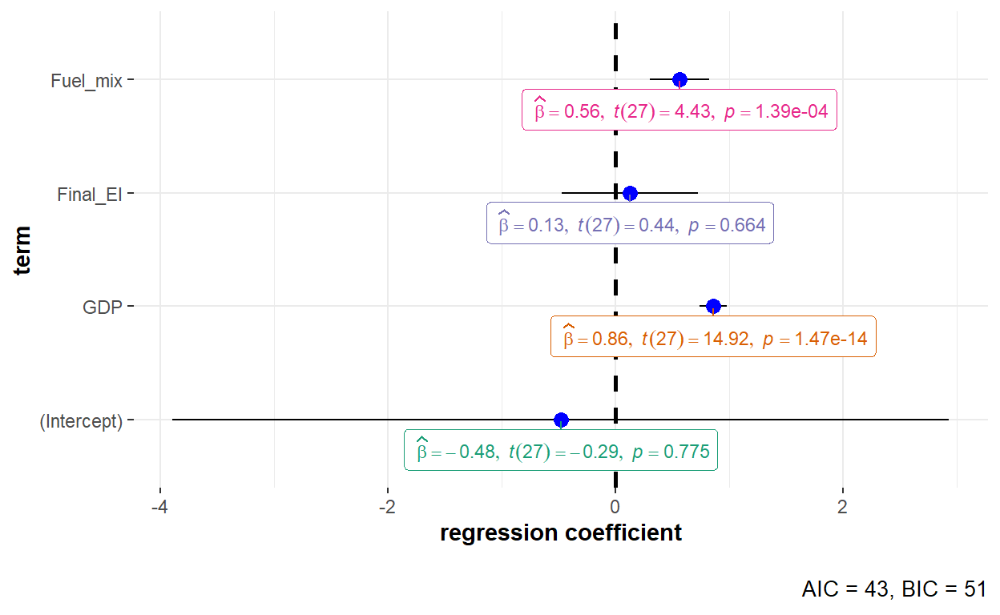
OLS regression assumes that all residuals are drawn from a population that has a constant variance i.e. homoskedasticity. If the assumption is violated, there is heteroskedasticity problem and the estimators will be inefficient and hypothesis tests will be invalid.
Below presents 3 methods to determine if there is heteroskedasticity problem.
(i) Bvensch Pagan Test
Using the lmtest() package, it will output the Chi2 or p-value. For the example below, since p-value is >0.05, the variance is constant.
# Using lmtest package
bptest(model, studentize = FALSE)
Breusch-Pagan test
data: model
BP = 0.91198, df = 3, p-value = 0.8225However, compared to lmtest() package, the function in olsrr() package is able to clearly indicate the null and alternative hypothesis, and the model tested on (shown below). This is more user friendly as users can easily identify the testing hypothesis, hence more preferred.
# Using fitted values of the model
ols_test_breusch_pagan(model)
Breusch Pagan Test for Heteroskedasticity
-----------------------------------------
Ho: the variance is constant
Ha: the variance is not constant
Data
-----------------------------------------
Response : GHG_emissions
Variables: fitted values of GHG_emissions
Test Summary
----------------------------
DF = 1
Chi2 = 0.235397
Prob > Chi2 = 0.6275506 In addition, one can modify the code chunk to make adjustment to the parameters as shown below.
# Using independent variables of the model
ols_test_breusch_pagan(model, rhs = TRUE)
# Using independent variables of the model and perform multiple tests
ols_test_breusch_pagan(model, rhs = TRUE, multiple = TRUE)
# Using Bonferroni p-value adjustment
ols_test_breusch_pagan(model, rhs = TRUE, multiple = TRUE, p.adj = 'bonferroni')
# Using Sidak p-value adjustment
ols_test_breusch_pagan(model, rhs = TRUE, multiple = TRUE, p.adj = 'sidak')
# Using Holm’s p-value adjustment
ols_test_breusch_pagan(model, rhs = TRUE, multiple = TRUE, p.adj = 'holm')
(ii) Score Test
Alternatively, we can also test for heteroskedasticity under the assumption that the errors are independent and identically distributed (i.i.d.).
From either the Chi2 or p-value, users can determine if the null hypothesis is being rejected and hence if variance is homogenous. For the example below, since p-value is >0.05, we cannot reject the null hypothesis and hence conclude that the variance is homogenous.
# Using fitted values of the model
ols_test_score(model)
Score Test for Heteroskedasticity
---------------------------------
Ho: Variance is homogenous
Ha: Variance is not homogenous
Variables: fitted values of GHG_emissions
Test Summary
----------------------------
DF = 1
Chi2 = 0.2979123
Prob > Chi2 = 0.5851942 In addition, one can modify the code chunk to make adjustment to the parameters as shown below.
# Using independent variables of the model
ols_test_score(model, rhs = TRUE)
(iii) F-test
Instead of using Score test, F-test can also test the assumption of iid.
# Using fitted values of the model
ols_test_f(model)
F Test for Heteroskedasticity
-----------------------------
Ho: Variance is homogenous
Ha: Variance is not homogenous
Variables: fitted values of GHG_emissions
Test Summary
-------------------------
Num DF = 1
Den DF = 29
F = 0.2813963
Prob > F = 0.5998264 Similarly, one can modify the code chunk to make adjustment to the parameters as shown below.
# Using independent variables of the model
ols_test_f(model, rhs = TRUE)
OLS regression assumes that the error has a normal distribution. Below presents 4 methods to detect the violation of normality assumption.
(i) QQ-plot
From the QQ-plot, if the data points do not fall near the diagonal line, it can be said that the normality assumption has been violated.
Using the EnvStats() package, we can obtain the Q-Q plot for the residuals.
However, there’s a function in olsrr() package which can also output the QQ residual plot. This is more efficient as the plot is coloured. More customization needs to be done if we were to use EnvStats() package (shown above).
ols_plot_resid_qq(model)
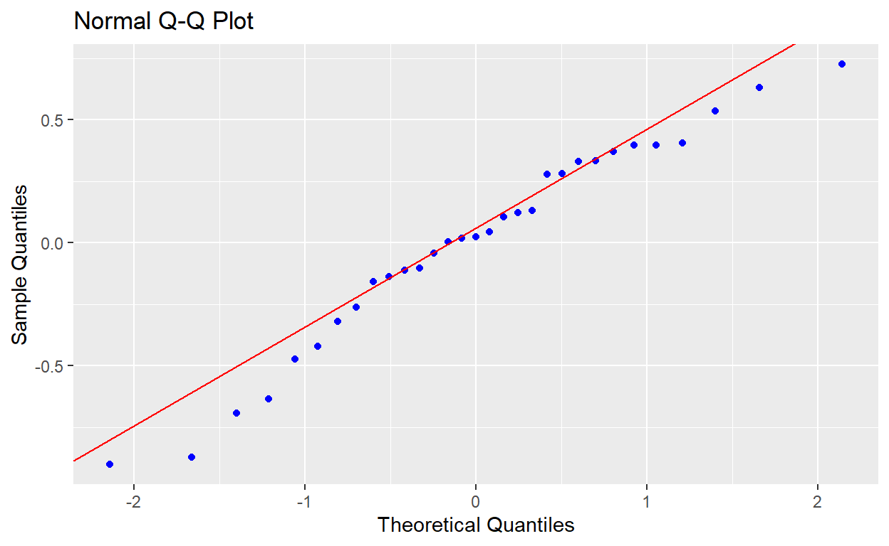
(ii) Normality test
Alternatively, the normality assumption can also be tested using the code chunk below.
ols_test_normality(model)
-----------------------------------------------
Test Statistic pvalue
-----------------------------------------------
Shapiro-Wilk 0.9636 0.3625
Kolmogorov-Smirnov 0.0996 0.8883
Cramer-von Mises 4.0754 0.0000
Anderson-Darling 0.3697 0.4046
-----------------------------------------------# Correlation between observed residuals and expected residuals under normality.
ols_test_correlation(model)
[1] 0.9847335(iii) Residual vs Fitted value
To detect non-linearity, unequal error variances, and outliers, plot a scatter plot with residual on the y-axis and fitted values on the x-axis.
res <- residuals(model)
fitted <- fitted(model)
plot(x=unlist(fitted), y=unlist(res), xlab="Fitted Value", ylab="Residual", col="blue")
abline(h=0, col="red")
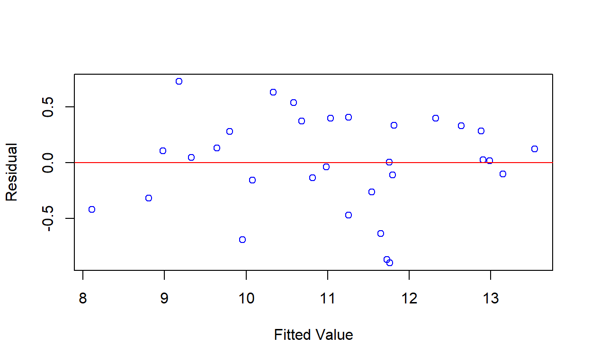
However, there’s a function in olsrr() package which can easy output the residual vs fitted value with a single line of code, which is more efficient. More customization needs to be done if we were to use graphics() package (shown above).
ols_plot_resid_fit(model)
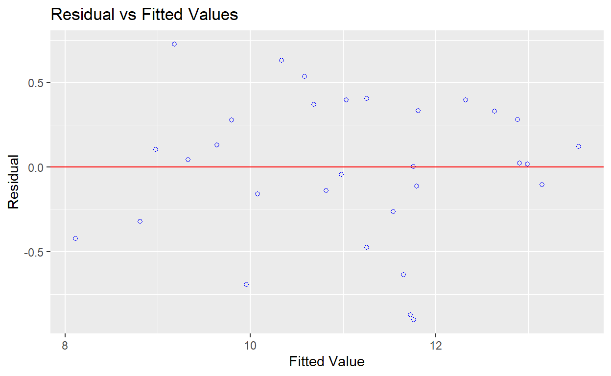
(iv) Residual Histogram
A histogram can also be plotted with a single line of code using olsrr() package to detect if normality assumption has been violated.
ols_plot_resid_hist(model)
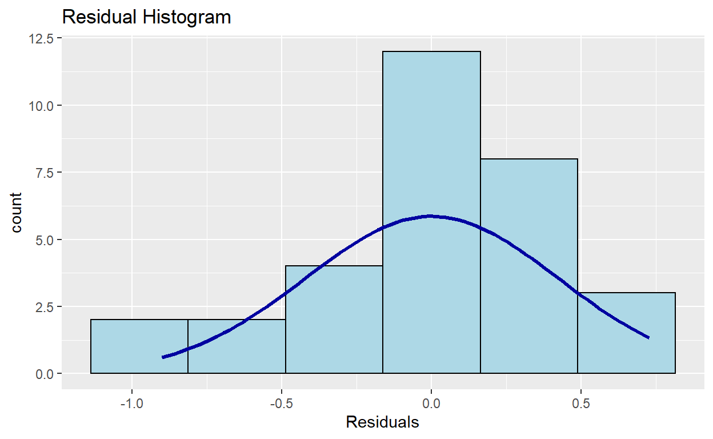
In this module, the following code chunk was explored to detect collinearity between variables. In the presence of multicollinearity, regression estimates are unstable and have high standard errors.
The following chunk of code was ran using olsrr() package and showed that the VIFs are less than 4 and hence there is little sign of multicollinearity that requires correction.
ols_coll_diag(model) #output VIF values and conditional index
Tolerance and Variance Inflation Factor
---------------------------------------
Variables Tolerance VIF
1 GDP 0.8502620 1.176108
2 Final_EI 0.8600236 1.162759
3 Fuel_mix 0.9643066 1.037015
Eigenvalue and Condition Index
------------------------------
Eigenvalue Condition Index intercept GDP Final_EI
1 3.728424273 1.000000 0.0001625225 0.0008966271 0.0002740949
2 0.256834939 3.810093 0.0006613313 0.0028267622 0.0012910893
3 0.013294254 16.746756 0.0071802453 0.6118807156 0.0942064483
4 0.001446534 50.768964 0.9919959010 0.3843958951 0.9042283675
Fuel_mix
1 0.017894663
2 0.951913455
3 0.025820588
4 0.004371294# ols_vif_tol(model) to output only the VIF values
# ols_eigen_cindex(model) to output only the conditional index
Alternatively, we could test multi-collinearity using the vif function in caret() package as shown below. Nonetheless, the ols_coll_diag function in olsrr() package is still preferred as it provides more information e.g. tolerence and conditional index. This gives user wider option to decide which criterion they would like to use for their evaluation.
car::vif(model)
GDP Final_EI Fuel_mix
1.176108 1.162759 1.037015 In this module, 3 sub-modules will be explored to determine the fit of the chosen model.
(i) Residual Fit Spread plot
Using the olsrr() package, we can easily See how much variation in the data is explained by the fit and how much remains in the residuals with just one line of code. If the spread of the residuals is greater than the spread of the centered fit, the model is deemed as inappropriate and users should consider choosing other models (repeat the variable selection module).
ols_plot_resid_fit_spread(model)
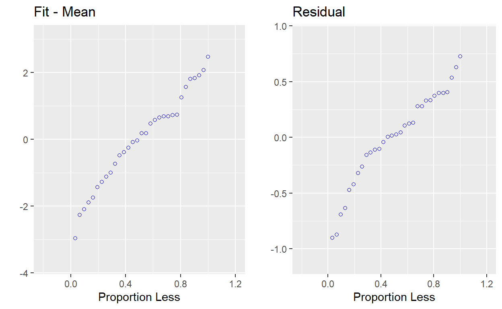
(ii) Part & Partial Correlations
The pcor function in the ppcor() package can calculate the pairwise partial correlations for each pair of variables given others. In addition, it gives us the p value as well as statistic for each pair of variables.
However, the output shows that there’s an error as the pcor function does not allow missing values.
pcor(ghg_2018_ols)
Error in if (det(cvx) < .Machine$double.eps) {: missing value where TRUE/FALSE neededOn the contrary, the ols_correlations function in olsrr() package is able to handle missing values and computes the relative importance of the independent variables in determining the dependent variable i.e. Greenhouse gas emissions level.
“Zero Order” shows the Pearson correlation coefficient between the dependent variable and the independent variable i.e. the higher the absolute value, the more correlated the dependent and independent variable are. “Partial” shows how much the estimated independent variable contributes to the variance in Y. While, “Part” shows the unique contribution of independent variables i.e. higher value indicates higher contribution (R-square) in explaining the model.
ols_correlations(model)
Correlations
------------------------------------------
Variable Zero Order Partial Part
------------------------------------------
GDP 0.926 0.944 0.823
Final_EI -0.335 0.084 0.024
Fuel_mix 0.399 0.649 0.245
------------------------------------------(iii) Observed vs Predicted plot
To access the fit of the model, we can plot the observed on the x-axis and fitted values on the y-axis using the plot function in graphics() package. A model is deemed as a good fit if the points are close to the diagonal line i.e. R-square will be higher.
fitted <- fitted(model)
# Exclude Liechtenstein and Switzerland as these two countries were dropped in the
# ols regression model step due to missing values in the predictors Final_EI and Fuel_mix.
ghg_2018_ols_v2 <- ghg_2018_ols[-c(29, 31),]
plot(x=ghg_2018_ols_v2$GHG_emissions, y=fitted, ylab="Fitted Value", xlab="GHG_emissions", col="blue")
abline(a=0, b=1, col="blue") #Add diagonal line
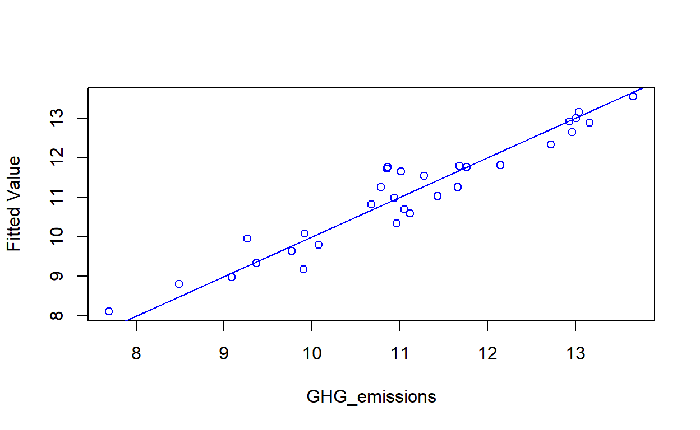
Exploring the olsrr() package, there is a function called ols_plot_obs_fit which plots the same graph as above, and includes the regression line (red). This function is preferred compared to plot function shown above as it is a single line code. In addition, the ols_plot_obs_fit function is able to exclude records which were dropped from the OLS model. This is unlike using plot function where additional code is needed to exclude records with missing values in the predictors.
ols_plot_obs_fit(model)
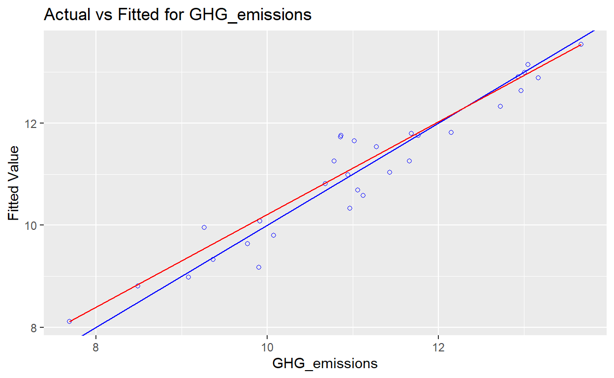
Based on the exploration of different packages shown in Section 3, the proposed visualization for the OLS regression module, the types of data visualizations used, and corresponding rationales are illustrated below:
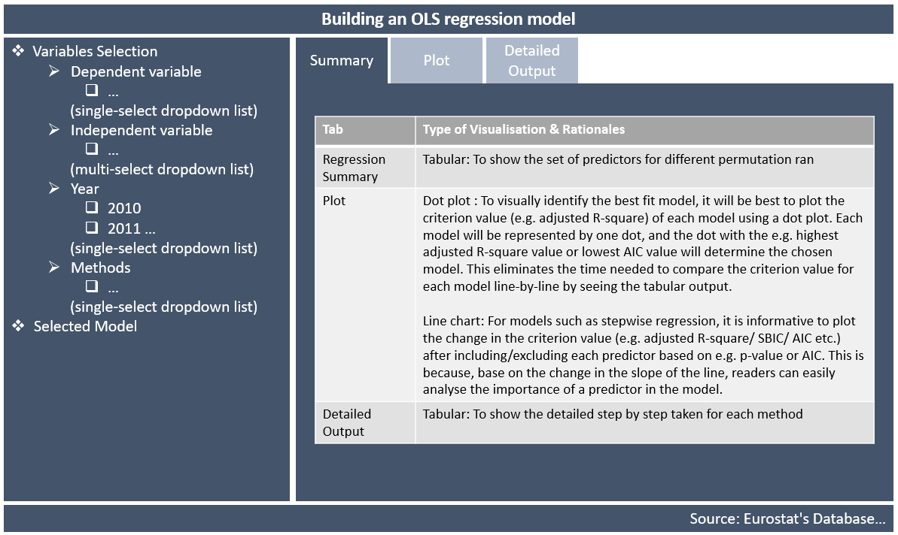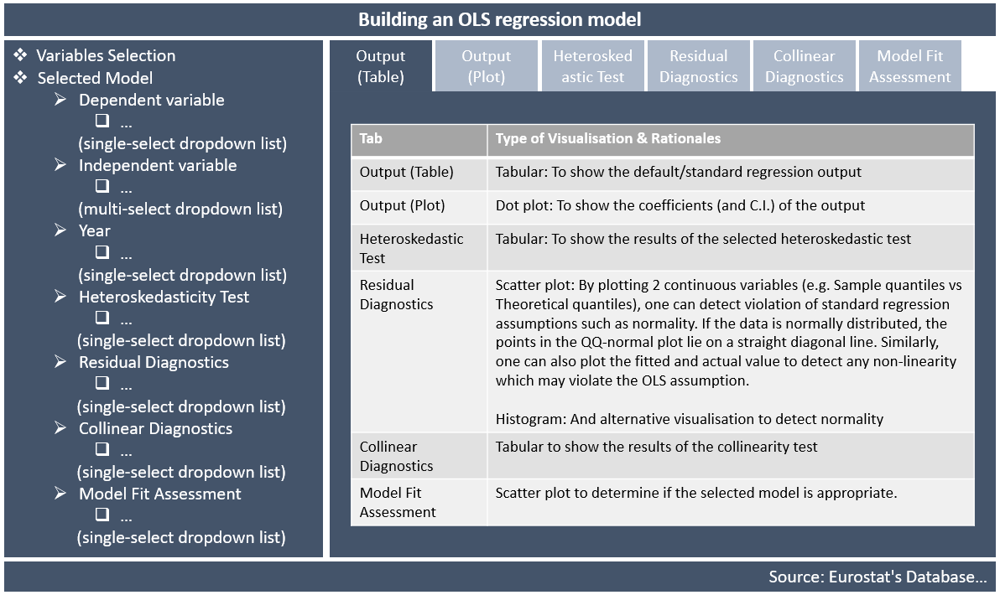
Interactivity
The following interactive features (left panel shown above) are proposed to be incorporated in the shiny app to enhance usability and hence user experience:
The application eliminates the need for users to write any code chunks to run different permutations of OLS regression models and/or assumptions test.
Major Advantages of Incorporating Interactivity
Thank you for reading :)